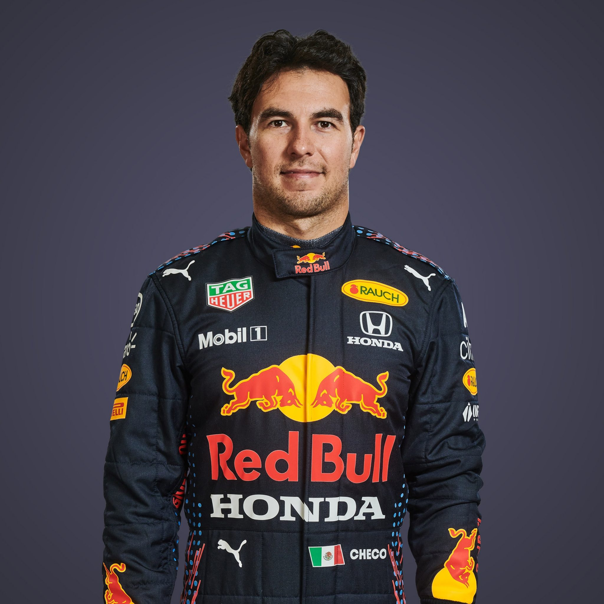

Max Verstappen
- Nationaliteit: Nederlands
- Geboortedatum: 30/09/1997
- Geboorteplaats: Hasselt, België
- Begonnen met racen: 2013
- Gewonnen races: 18
- Pole posities: 12
- Podium Finishes: 55
- Snelste rondes: 14

Sergio Perez
- Nationaliteit: Mexicaans
- Geboortedatum: 26/01/1990
- Geboorteplaats: Guadalajara, Mexico
- Begonnen met racen: 2011
- Gewonnen races: 2
- Pole posities: 0
- Podium Finishes: 14
- Snelste rondes: 5
Red Bull Racing came into existence late in 2004 – under the guidance of Team Principal Christian Horner – with ambitions to challenge for race victories and world championship titles.
Over the next four seasons solid foundations were laid. The Team recruited in both quantity and quality, steadily expanding until it was capable of going toe-to-toe with the most illustrious names in racing.
The Team finished seventh in 2005 and 2006. The initial driver line-up was a mix of youth and experience: David Coulthard provided the latter, while Christian Klien, Vitantonio Liuzzi and Robert Doornbos were the former. DC scored the Team’s first podium, finishing third in Monaco in 2006.
For 2007 Mark Webber came onboard to join DC. The Team finished fifth in 2007 but dropped back to seventh again in 2008 – but everything was going to change in 2009.
Coulthard retired at the end of 2008 to be replaced by Sebastian Vettel. Seb’s arrival coincided with a major reset in the sport’s aerodynamic regulations. The new rules gave the Technical Team the chance to shine. In the RB5 they produced a winner. Vettel took the Team’s first victory, leading home Webber in a 1-2 finish at the Chinese Grand Prix. The car would win five more times in 2009, including Webber’s debut F1 victory at the Nürburgring. The Team finished second in the Constructors’ Championship but, perhaps more significantly, it won the final three races of the season.
History was made in 2010. Driving the RB6, Webber and Vettel were title contenders from the start. Their consistent podium finishes secured the Constructors’ Championship at the penultimate round in Brazil. Both drivers went to the final race in Abu Dhabi with a shot at the Drivers’ crown. Vettel emerged triumphant, winning the race to become the sports’ youngest ever World Champion.
The Red Bull RB7 and Vettel dominated 2011. He took 11 of the Team’s dozen victories and took his second Drivers’ title with four races to spare. The Constructors’ title was confirmed with three races still to go.
The competition fought back in 2012, the first seven races went to seven different winners representing five different manufacturers. Red Bull Racing Honda kicked on in the second half of the season and four consecutive victories saw Vettel emerge as a strong title contender. Those wins also propelled the Team to a significant lead in the Constructors’ Championship. Both titles were clinched by the season’s end.
In 2013 the RB9 looked like the class leader – but somehow never seemed to produce what it promised. That changed after the mid-season break when Vettel went on the rampage, setting a new record for consecutive victories – nine! Both titles were secured with three races to spare.
The 2014 season saw reality bite as the new hybrid power units heralded a change. Saddled with a sizeable horsepower deficit the RB10 lacked the competitive edge enjoyed by its predecessors. Nevertheless, the car was still good enough to provide Daniel Ricciardo with his first, second and third Formula One victories.
Ricciardo had replaced Webber, the latter having decided to retire from Formula One. Ricciardo outscored his quadruple World Champion teammate to finish third in the standings. While the Team came down to earth in 2014, its new driver was flying high.
Vettel departed at the end of 2014 and was replaced Daniil Kvyat. Still plagued by a horsepower deficit, and struggling to get the car balanced, the Team endured its worst campaign since 2008.
Red Bull moved up in 2016. The Team finished second in the Constructors’ Championship and Ricciardo was third in the Drivers’ table – though the name on everyone’s lips was Max Verstappen. The young Dutchman was promoted from Toro Rosso to replace Kvyat after four races of the season. He got off to the best start possible, winning his first race at the Spanish Grand Prix. Ricciardo added a second victory in Malaysia.
2017 saw the RB13 struggle early on. The Team, however, excels at in-season development, and was soon on the podium. Daniel managed a mid-season sequence of five top three finishes in a row, including victory in Azerbaijan. It was, however, later in the year that the car started to look properly competitive, with Max taking victories in Malaysia and Mexico.
2018 produced similar results, the RB14 was dialled in from the start of the season but a horsepower deficit hampered performance. Nevertheless, Daniel was able to collect ins in China and Monaco. Sadly, power unit failures became a talking point in Daniel’s season, with many races blighted by reliability problems. Like Daniel, Max finished 2018 with two victories. Thanks to his drive in Austria, we finally celebrated a home win at the Red Bull Ring.
While this seemed very much like business-as-usual, 2018 was a season of change. The Team announced it would end an 11-year association with Renault and would become a Honda-powered outfit for 2019. Six weeks later Daniel Ricciardo said that after a decade with Red Bull, he would be leaving. His move saw Pierre Gasly rewarded for his exceptional performance at Toro Rosso with a promotion to the senior team for 2019.
There were green shoots of success from the beginning of the 2019 season for Max. He really shone in Austria where he took his first win of the year and Honda’s first Formula One win since 2006. Max went on to claim two more wins, his first pole position, and finish third in the Drivers’ Championship – his best season to date. After 12 races into the season, Alex Albon was promoted from Toro Rosso for the remainder of the season. Alex’s debut season was rewarded when he claimed the Rookie of the Year trophy at the end of season awards.
The two drivers returned in 2020 along with Honda, however the season start was put on hold, along with the world, as the COVID-19 global health pandemic hit. However, the sport eventually got going in July at the Red Bull Ring and a shortened 17-race calendar was confirmed.
It was a relatively successful campaign for the Team, despite being up against a strong Constructors' title winning Mercedes. The season was a strong one for Max, with the Dutchman claiming a podium finish in all but one of the races he finished. He ended 2020 with one pole position, two race wins, six second places and three third place finishes. Max finished third in the Drivers’ World Championship with 214 points.
Teammate Alex had a tougher season after struggling to get on top of the tricky RB16. But he made history in Mugello by becoming the first ever Thai driver to claim a podium finish in Formula One. He followed that up with another third place in Bahrain and finished the Drivers’ World Championship in seventh with 105 points.
The pair’s achievements saw the Team finish P2 in the Constructors’ Championship on 319 points.
Entering the 2021 season, the Team will have a new driver line up with Max and Sergio ‘Checo’ Pérez going behind the wheel of our new challenger. As Alex changes roles in the Team and becomes Red Bull Racing’s Test and Reserve Driver.